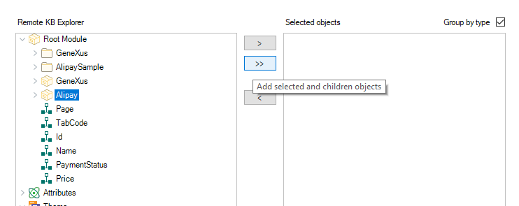

This feature enables you to explore remote Knowledge Bases from within the GeneXus IDE. It is a practical way to view, copy, and integrate content from remote KBs into the KB that is opened in GeneXus. Note: To be able to explore and integrate from a remote KB, the latter must be hosted in a GeneXus Server.
How to Explore Remote Knowledge BasesTo explore a remote Knowledge Base, go to the Knowledge Manager menu, and select Explore Remote Knowledge Base A new dialog will open that lists all the registered GXservers and the hosted KBs for each GXserver. Select the Knowledge base you want to explore and click on the 'Select' button.
This will open a new dialog that shows the KB and version that is being explored, as well as a Remote KB Explorer which lists the contents of the KB; in the same way, the GeneXus KB Explorer lists all objects in the opened KB. You can change the KB being explored by clicking on the button next to the KB Name. You can change the version being explored by changing the value of the combo box next to the Version label. From this dialog, you can access the entire content of Explore Knowledge Base, remotely. This is similar to the way you can explore a local KB in GeneXus, except that in this case the KB being explored is hosted in GXserver. To open an object, double-click on it, in the same way you would do in the KB Explorer.
After double-clicking an object, GeneXus will contact GXserver to retrieve the contents of the remote object. While this operation is in progress, a loader icon is displayed in the window. Once the object has been correctly retrieved, it is automatically opened in GeneXus editor:
From this editor, you can explore the remote object in the same way you would explore any object in your local Knowledge Base. You can see its properties, code, variables, and even copy any code or controls you want into your own Knowledge Base, directly, without having to create the KB from GXserver at any time. You can also reposition the object location in the Remote KB Explorer, from the object menu by right-clicking on the object tab and selecting 'Locate in Remote KB Explorer.' Now suppose you would like to integrate some of the contents of a remote Knowledge Base into your opened KB. In this case, you would most likely want to bring a set of objects, maybe all objects contained in a specific module. To be able to perform this task in a really practical way, the Remote Explorer has a set of selected objects that can be imported at any time. Click an object from the Remote KB explorer and select one of the two options for marking the object as selected: 
In this case, we added all of the objects present in the Alipay module to the selected object list. Selected objects can be listed grouped by type or individually.
When all the selected objects you want are in the list, you can integrate these objects by clicking on the downright button 'Import in Local KB'
This will contact GXserver and retrieve all the objects and their contents, and launch an import operation from the import dialog.
AvailabilityThis feature is available since GeneXus 17 upgrade 3. |